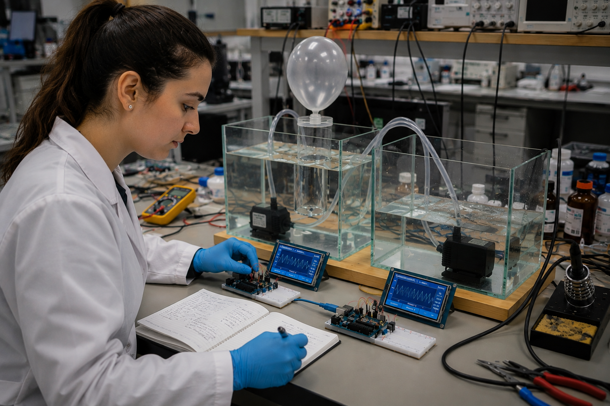

OrígenesOrigins · 03 · AvanzadoAdvanced
La evolución del Modelo Simple. Control de presión, expiración asistida, sensores en línea y monitorización clínica. La misma idea, llevada al siguiente grado de seguridad. The evolution of the Simple Model. Pressure control, assisted expiration, in-line sensors and clinical monitoring. The same idea, taken to the next level of safety.
Documentación en preparación Documentation in preparation

El Modelo Avanzado conserva la columna de agua y la botella invertida del Modelo Simple — esa idea sigue siendo el corazón del sistema —, y le añade lo que separa un equipo de emergencia de un equipo clínicamente seguro: control de presión, sensores en línea, expiración asistida, válvulas de seguridad redundantes y monitorización en tiempo real. The Advanced Model keeps the water column and the inverted bottle of the Simple Model — that idea remains the heart of the system — and adds what separates emergency equipment from clinically safe equipment: pressure control, in-line sensors, assisted expiration, redundant safety valves and real-time monitoring.
REAMIMA mantiene activa la línea de I+D del proyecto. Esta página recoge el alcance funcional previsto: cualquier persona u organización que quiera colaborar puede escribirnos. La documentación detallada — esquemas, código y fichas de validación — se publicará por bloques, igual que se hizo con el Modelo Simple. REAMIMA keeps the project’s R&D line active. This page sets out the planned functional scope: anyone or any organisation interested in collaborating is welcome to get in touch. Detailed documentation — schematics, code and validation sheets — will be published in blocks, the same way the Simple Model was.
01 · PresiónPressure
Un sensor diferencial mide la presión de la línea inspiratoria en tiempo real. El controlador modula el caudal de la bomba mediante PWM para mantener la presión dentro de la ventana clínica fijada por el operador. Si se supera el umbral, la válvula de seguridad alivia inmediatamente. A differential sensor measures inspiratory line pressure in real time. The controller modulates pump flow via PWM to keep pressure within the clinical window set by the operator. If the threshold is exceeded, the safety valve relieves immediately.
PIP
Presión inspiratoria picoPeak inspiratory pressure
Límite ajustable, alarma sonora y visual.Adjustable limit, audible and visual alarm.
PEEP
Presión positiva al final de la espiraciónPositive end-expiratory pressure
Mantenida con la columna de agua de retorno y válvula calibrada.Maintained by the return water column and a calibrated valve.
02 · CaudalFlow
Un sensor de caudal en la rama inspiratoria — efecto Venturi o anemómetro térmico, según disponibilidad — permite integrar el caudal en el tiempo y obtener el volumen tidal real entregado en cada ciclo. Esto cierra el lazo de volumen y libera al operador de calcularlo a partir de las cotas. A flow sensor on the inspiratory branch — Venturi-effect or thermal anemometer, depending on availability — allows the flow to be integrated over time and yields the actual tidal volume delivered per cycle. That closes the volume loop and frees the operator from estimating it from the levels.
03 · ExpiraciónExpiration
En el Modelo Simple la expiración es pasiva. En el avanzado, la rama de expiración pasa por una válvula calibrada que mantiene PEEP y por una segunda columna de agua que actúa como sello unidireccional. Una bomba auxiliar permite asistir la expiración cuando es clínicamente necesario. In the Simple Model, expiration is passive. In the Advanced Model, the expiratory branch passes through a calibrated valve that maintains PEEP and through a second water column that acts as a one-way seal. An auxiliary pump assists expiration when clinically required.
04 · MonitorMonitor
Pantalla con curvas de presión, caudal y volumen en tiempo real, parámetros editables (frecuencia, volumen tidal, PEEP, PIP, FiO₂) y alarmas. Los datos se registran localmente y, opcionalmente, se envían a un sistema de monitorización del centro hospitalario. A screen with real-time pressure, flow and volume waveforms, editable parameters (rate, tidal volume, PEEP, PIP, FiO₂) and alarms. Data is logged locally and, optionally, sent to a hospital monitoring system.
05 · SeguridadSafety
Doble válvula de alivio, sensor de presión redundante, watchdog en el firmware, alimentación con SAI integrado y un modo manual independiente del controlador. Si el sistema digital falla, la columna de agua sigue funcionando: ese fue, desde el principio, uno de los principios de diseño. Dual relief valve, redundant pressure sensor, firmware watchdog, integrated UPS power and a manual mode independent of the controller. If the digital system fails, the water column keeps running: that was, from the beginning, one of the design principles.
Línea de I+D parada en 2021. La documentación queda publicada aquí como referencia técnica e histórica. R&D line paused in 2021. The documentation is kept here as technical and historical reference.